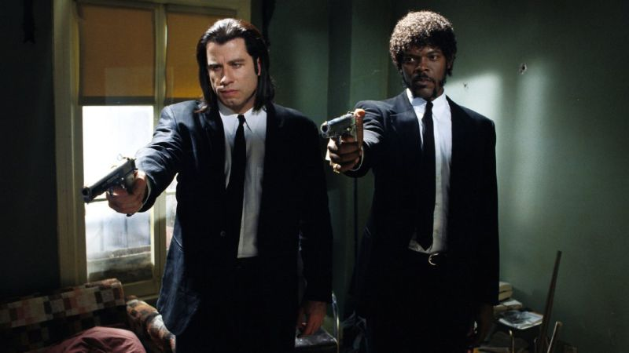

Inglourious Basterds
In 1941, SS-Standartenführer Hans Landa interrogates French farmer Perrier LaPadite, suspecting that the LaPadites are hiding a Jewish family, the Dreyfuses, under their floorboards. LaPadite confirms this to spare his own family, and Landa has the hidden family shot, but allows Shosanna Dreyfus to escape.[9] Three years later, U.S. Army Lieutenant Aldo Raine recruits Jewish-American soldiers to the "Basterds", a black ops commando unit instilling fear among Nazis in occupied France by killing and scalping them.

Pulp Fiction
Narrative structure Pulp Fiction's narrative is told out of chronological order and follows three main interrelated stories that each have a different protagonist: Vincent Vega, a hitman; Butch Coolidge, a prizefighter; and Jules Winnfield, Vincent's business partner.[9] The film begins with a diner hold-up staged by a couple, then begins to shift from one storyline to another before returning to the diner for the conclusion. There are seven narrative sequences; the three primary storylines are preceded by intertitles: "Prologue – The Diner" (i) Prelude to "Vincent Vega and Marsellus Wallace's Wife" "Vincent Vega and Marsellus Wallace's Wife" Prelude to "The Gold Watch" (a – flashback, b – present) "The Gold Watch" "The Bonnie Situation" "Epilogue – The Diner" (ii) If the seven sequences were ordered chronologically, they would run: 4a, 2, 6, 1, 7, 3, 4b, 5.

Shawshank Redemption
In early 1947, Portland, Maine, banker Andy Dufresne arrives at Shawshank State Prison to serve two consecutive life sentences for murdering his wife and her lover. He is befriended by Ellis "Red" Redding, a contraband smuggler serving a life sentence, who procures a rock hammer and a large poster of Rita Hayworth for Andy. Assigned to work in the prison laundry, Andy is frequently sexually assaulted by prison gang "the Sisters" and their leader, Bogs Diamond. In 1949, Andy overhears the captain of the guards, Byron Hadley, complaining about being taxed on an inheritance and offers to help him shelter the money legally.
Shutter Island
In 1954, U.S. Marshal Edward "Teddy" Daniels and his new partner Chuck Aule travel to Ashecliffe Hospital for the criminally insane on Shutter Island, Boston Harbor, to investigate the disappearance of Rachel Solando, a patient of the hospital who had previously drowned her three children.